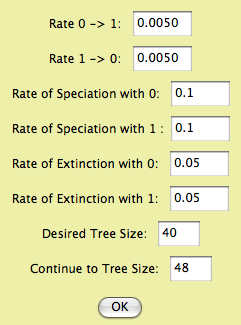

Diversification: Speciation and extinction
The diversification processes that determine the branching pattern of the phylogenetic tree, speciation and extinction, can be simulated and analyzed. There is a series of example files available showing some of these features.- Simulating speciation and extinction to generate trees
- Lineages Through Time plots
- Analysis of Speciation/Extinction rates
- Analysis of Character-associated Speciation/Extinction rates
Simulations
Trees can be created through simulations of speciation and extinction. Here are options:- Tree simulators available to make tree blocks (Taxa&Trees>Make New Trees Block from>Simulated Trees) or to generate trees on demand (e.g., for charts or in the tree window).
- Uniform speciation (Yule) (trees package) - Generates tree by a pure birth process (a Yule process). The chance of speciation is equal for all tips. Options: total time depth of tree.
- Uniform speciation with sampling (TreeFarm package) — Generates a tree by Yule process, as above, but with to a total number of species greater than in the taxa block. Extra species are then randomly sampled out, to leave the tree with the appropriate number of species. Barraclough & Nee (2001) discuss how this sampling alters the branch length distribution of the tree.
- Birth/Death process trees (Diverse package) — Generates trees with a speciation rate and extinction rate.
- Trees & Diversification Characters (Diverse package) — Simulates speciation and extinction, simultaneous with the evolution of characters that influence speciation and extinction rates. Select the Trees & Diversification Characters item in the Taxa&Trees menu to generate the tree block and a character matrix; the i'th tree was evolved in connection with the i'th character in the matrix.
- BiSSE Trees & Characters — by this model, a categorical character evolves with two states, which can cause their lineages to differ in their speciation rates, and in their extinction rates. You will be given the following options for setting up the simulation:

The rates of character change, speciation and extinction represent the 6 parameters of the BiSSE model. The Desired Tree Size is the number of terminal taxa in the trees you want to produce. By default this is the current number of taxa in the data file, but you could choose a number either higher or lower. The "Continue to Tree Size" option is explained as follows. The algorithm starts speciation and extinction and eventually the desired tree size is reached. However, it doesn't stop there, because if the simulation were continued, that desired tree size might be achieved several times (fluctating as speciation and extinction push the number of species up and down). The simulation continues until the size indicated in "Continue to Tree Size", which should be larger than the desired size. The simulation goes to that tree size and then looks back at all of the intermediate steps in which a tree of the desired number of taxa was achieve. It then selects one of these trees randomly. (NOTE: the simulation used in this module differs from that used by Maddison, Midford and Otto, 2007, who used a prerelease version of the module. Their simulation proceeded in small time slices, and stopped as soon as the desired tree size was reached. The released version samples exponential wait times to jump to the next event, and proceeds beyond the desired tree size as described above.) - Evolving Speciation Rate (continuous character) — This is a speciation-only model. A continuous character evolves by Brownian motion; this character is the speciation rate. There is no extinction.
- BiSSE Trees & Characters — by this model, a categorical character evolves with two states, which can cause their lineages to differ in their speciation rates, and in their extinction rates. You will be given the following options for setting up the simulation:
Lineages through Time
You can display a lineages through time plot of the current tree in the tree window by selecting the (Tree Window)Analysis:Tree>Lineages through Time menu item.Analysis: Speciation/Extinction rates (Independent of character)
This analysis assumes that speciation and extinction rates are constant (they do not depend on any character). The calculation is available in the Analysis:Tree menu of a tree window, under Diversification (Char. Indep.). The calculation is also available anywhere that a value for a tree can be calculated, for instance in the Tree Legend of the tree window (under Analysis:Tree), in the List of Trees (Columns>Number For Tree>), and in a Trees chart.- Speciation/Extinction Likelihood - This calculates the likelihood of a simple birth/death model with a speciation rate and an extinction rate, using a reduced form of the BiSSE calculations of Maddison, Midford & Otto 2007. If the rates are not indicated (i.e. are indicated as ?), then they are estimated.
Analysis: A binary character's effect on diversification
These analyses explore whether there is an association between the states of a characters, and the rates of speciation and extinction. These analyseis are available in the Analysis:Tree menu of a tree window, under Character-Associated Diversification. They are also anywhere that a value for a tree can be calculated, for instance in the tree legend of the tree window (Analysis:Tree>Tree Legend>Tree Value Using Character, Show secondary choices), in the List of Trees (Columns>Number for Tree>Tree Value Using Character, Show secondary choices), and in charts of trees. They are also available in the List of Characters window (Columns>Number For Character>Character Value with Current Tree, Show secondary choices) and in charts of characters.- BiSSE Speciation/Extinction Likelihood (Maddison, Midford & Otto, 2007) — This calculates likelihoods and estimates parameters of a 6 parameter model of speciation, extinction and character change. The parameters are speciation rate under state 0 (lambda0), speciation rate under state 1 (lambda1), extinction rate under state 0 (mu0), extinction rate under state 1 (mu1), rate of 0 to 1 character change (q01), and rate of 1 to 0 character change (q10). In the parameters dialog box you can set the parameter values (or leave them "?", to be estimated), and you can constrain some to be equal to others.
- BiSSE Net Diversification Likelihood — This is basically the same calculation as the BiSSE speciation/extinction likelihood, but is reparameterized as net diversification rate under state 0 (r0, which is lambda0-mu0), under state 1 (r1), speciation/extinction ratio under state 0 (a0, which is lambda0/mu0), under state 1 (a1), and the two character state change rates. It is reparameterized to permit you to set constraints of equality that would otherwise be unavailable.
- Sister Diversification — This uses the simple sign test on independent sister clade pairs in the style of Mitter, Farrell and Wiegmann 1988. The analysis automatically finds sister clade pairs that contrast in the character state of the binary character. Each clade must be completely uniform in state. The number of pairs favoring state 1 (i.e. the clade with state 1 is larger) and favoring state 0 are counted and used as the basis for the sign test.
The BiSSE likelihood calculations
The Diverse package's BiSSE calculations are based on the equations of Maddison, Midford & Otto (2007). The maximum likelihood calculations are performed using the optimizer of Brent (1973). To improve the performance of the optimizer, the BiSSE module invokes the optimizer from 10 randomly selected starting points. During these runs, the numerical integrator (see below) is set to run with a relatively large starting step size equal to 1/100 the length of an average branch. This length is value is allowed to vary somewhat (a range of 8:1) with the length of the particular branch, so that extremely short branches and long branches are not undercounted or overcounted respectively. The final likelihood value is then calculated using the starting point with the best likelihood, but a smaller step size (1/1000) the average branch length.The BiSSE method requires numerical solution of a system of four differential equations along each branch of the tree. To do this, Diverse uses a RKF45 (Runge-Kutta-Fehlenberg fourth order method with fifth order step-size control) algorithm to integrate along the branches. The step-size control allows the step size to vary from the starting value based on the correction calculation. Because BiSSE equations are relatively well behaved, using a higher order correction mostly serves to speed the calculation by allowing the method to grow the step size. Note that this method is a refinement of the RK4 algorithm used in Maddison, Midford & Otto (2007).
Hypothesis Testing
To test hypotheses about the association between a character and diversification rates, you can use either the Sister Diversification calculation, which directly gives a P value, or the BiSSE Ln Likelihood Difference calculation, which can be used to get a p value. The former is an old but fairly non-parametric calculation; the latter is parametric but uses more of the information in the tree.The BiSSE Ln Likelihood Difference calculation is used for likelihood ratio tests. It performing the calculations in constrained and unconstrained ways and calculating the difference in likelihood. You can access these calculations as a choice when you do the Character-Associated Diversification analysis in the Analysis:Tree menu of the Tree window, or in other places (such as charts) where you are calculating a value for a tree and character. You will be asked first to specify the parameters of the unconstrained model, then the parameters of the constrained model.
The likelihood difference can be used to answer whether, for instance, two parameter values are the same. Thus, the constrained model would set them equal (using the "Constrain =" choices in the dialog), while the unconstrained model would not include this constraint. When there is a difference of a single degree of freedom in the constrained and unconstrained models (i.e. comparing a five parameter and a 6 parameter model) then two times the likelihood difference appears to be approximately distributed as a chi square (Maddison, Midford & Otto 2007), so that you can use that distribution for significance values.
It is more accurate, but more time consuming, to simulate under the null model to derive your own distribution for statistical testing. You can do this as follows.
- With your data, estimate the values of the BiSSE parameters in the constrained case (e.g., lambda0 = lambda1).
- Simulate trees and characters using Trees & Diversification Characters in the Taxa&Trees menu, choosing the BiSSE Trees & Characters as the simulator. Enter the parameters as you had estimated them from your data. Choose as many taxa as in your data. You might want to simulate a small number of trees, e.g. 5, at first, just to practice with these calculations. (Later increase the sample size to a large number, e.g. 1000, to derive a good distribution.)
- Save the file (just in case).
- Choose New Bar & Line Chart for... Characters. You will be asked a series of question. Here are the responses:
- If asked, choose Stored Characters for Source of Characters. If given a choice, make sure you choose the matrix you just simulated with BiSSE Trees & Characters.
- Value (under secondary choices): Character value with Respective Tree
- Source of trees: Stored trees. If given a choice, make sure you choose the trees you just simulated with BiSSE Tree & Characters.
- Value: BiSSE Ln likelihood difference
- BiSSE Parameters: Leave the parameters unspecified, but set the constraints to be as in your UNCONSTRAINED model.
- BiSSE Parameters: Leave the parameters unspecified, but set the constraints to be as in your CONSTRAINED model.
- This calculation may take a long time. If asked, indicate you want to save a table of results. Also, print the chart and save it as text once it's done. You might not want to redo it (as it takes a while).
Multiple Trees
You can examine likelihoods, or other single parameters from the BiSSE modules, over multiple trees by asking for a tree chart and indicating you want a Tree Value using Character. You will be asked if you want to save the results as a table to a text file during the calculations; this text file will contain all of the parameter values as well, as a tab-delimited table, so that you can import it into a spreadsheet program.You can also examine multiple trees by setting up the tree window and selecting Character-Associated Diversification in the Analysis:Tree menu to begin a BiSSE calculation. Then, you can paste the following script into the Send Script dialog box (available in the Tree window's Window menu, Scripting submenu). This script will go from tree to tree, saving results as it goes.
String.resultsFile 'results.txt'; saveMessageToFile *String.resultsFile 'RESULTS with different trees'; appendReturnToFile *String.resultsFile; getWindow; tell It; getNumTrees; Integer.numReps *It; ifNotCombinable *Integer.numReps; Integer.numReps 10; [in case indefinite number of trees] endIf; endTell; debug; Integer.count 0; for *Integer.numReps; increment.count; getWindow; tell It; setTreeNumber *Integer.count; endTell; getEmployee #mesquite.diverse.CharAssocDivViewer.CharAssocDivViewer; tell It; doCounts; [because counts dont auto-update when scripting] endTell; getEmployee #mesquite.diverse.BiSSELikelihood.BiSSELikelihood; tell It; getLastResult; String.result *It; appendMessageToFile *String.resultsFile *String.result; appendReturnToFile *String.resultsFile; endTell; endFor;
References
Brent, R. P. 1973. Algorithms for Optimization without Derivatives. Englewood Cliffs, New Jersey. Prentice Hall.Maddison, W.P., P.E. Midford & S.P. Otto. 2007. Estimating a binary character's effect on speciation and extinction. Systematic Biology 56:701-710.
Mitter, C. , B. Farrell, and B. Wiegmann. 1988. The phylogenetic study of adaptive zones: has phytophagy promoted insect diversification? American Naturalist 132:107–128.